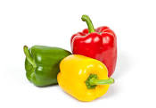

I have a small sweet garden and plant a few vegetables. I always love planting.My kids love vegetables. Every morning they check plants and pick them up.
Tomatoes are a great source of vitamins. A single tomato can provide about 40% of the daily recommended minimum of vitamin C. What's more, tomatoes supply vitamin A, which supports immunity, vision, and skin health; vitamin K, which is good for your bones; and potassium, a key nutrient for heart function, muscle contractions, and maintaining a healthy blood pressure and fluid balance.
There is a link more about nutrion of tomates: visit webmd.com!
Cucumbers promote bone health, The top nutrient in cucumbers is vitamin K, which is key for bone health. One cup of cucumber with the peel still on supplies over 20% of the recommended daily target for vitamin K. This nutrient is required for bone formation, and several studies have linked low K levels to osteoporosis and increased fracture risk.

Bell peppers are very high in vitamin C, with a single one providing up to 169% of the RDI. Other vitamins and minerals in bell peppers include vitamin K1, vitamin E, vitamin A, folate, and potassium.